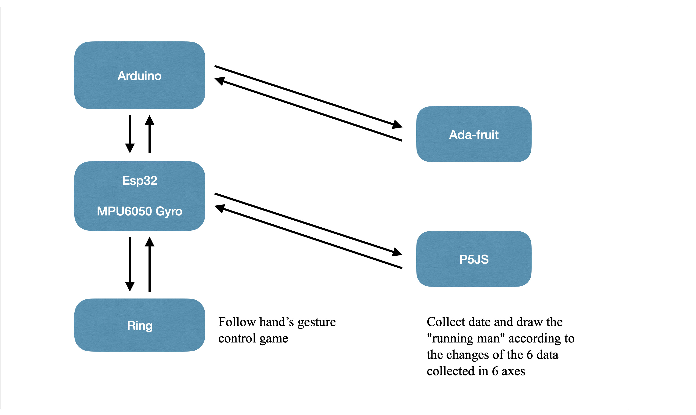
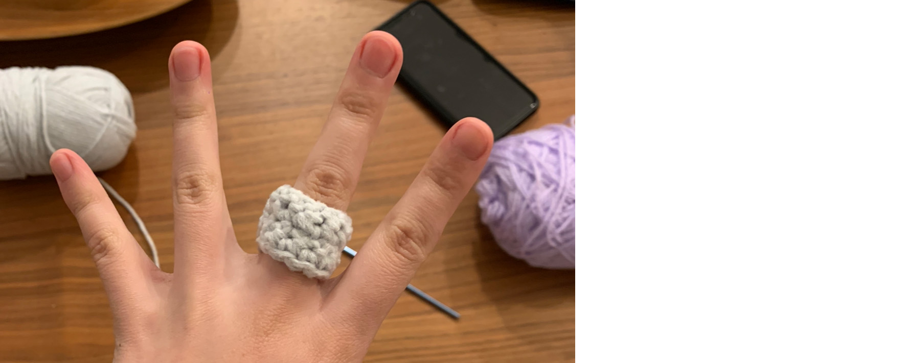

Running Ring
1. Collect and record data from the MPU6050 every five seconds.
2. Record all the data.
3. Translation of raw values into meaningful data takes place before recording.

Connecting Esp32 with MPU6050:

Successfully collected data, but could not upload to Adafruit successfully

Fixed problems, Successfully upload data

Knit a finger ring and attach the MPU6050 to hand via the ring. Running with the ring on, collecting six-axis data via Adafruit

Draw the completed runner on the p5js platform through the collected data

Next Step in Future:
Combine the MPU6050 with the third project's game, collect hand gesture through the MPU6050 and control the boat to complete the game.
Spring 2023